<div layout="column" style="background-color: #bbe7f0;">
	<!-- search input bar & button -->
	<div layout="row" layout-align="center center" style="padding: 0 20px; ">
		<md-input-container flex class="md-primary wtfsafari" style="padding-top: 12px;margin-bottom: 0;">
			<label style="color:#000; top:-12px;">搜索</label>
			<input ng-model="vm.searchGoodsName" aria-label="goodsName" style="border-bottom-color: #000;">
		</md-input-container>
		<md-button class="seek_btn" ng-click="vm.onSearch({name:vm.searchGoodsName, category:vm.searchGoodsCategory, bound:vm.searchWithBound ? vm.mapBound : '', global:vm.searchWithBound ? 0 : 1})">
			<md-icon md-font-set="material-icons">search</md-icon>
		</md-button>
	</div>
	<div layout="row" layout-align="start center" layout-margin style="padding-left:4px;">
		<md-input-container flex="65" flex-gt-xs="85">
			<label>種類</label>
			<md-select ng-model="vm.searchGoodsCategory" aria-label="cate">
				<md-option ng-repeat="cate in vm.availableCategory" value="{{cate.label}}">
					{{cate.alias}}
				</md-option>
			</md-select>
		</md-input-container>
		<!-- <div flex="85" layout="row" layout-wrap hide-xs>
			<div class="cate-btn" flex="15" layout-margin layout="row" layout-align="center center" ng-repeat="cate in vm.availableCategory">{{cate.alias}}</div>
			
		</div> -->
		<div flex="35" layout layout-align="center center">
			<md-switch class="switch" ng-model="vm.searchWithBound" aria-label="searchWithBound" style="font-size: 10px;">
				<md-tooltip>搜尋視界內物品/搜尋全世界</md-tooltip>
				<span style="color:black;">{{ vm.searchWithBound ? '視界內' : '全域' }}</span>
			</md-switch>
		</div>
	</div>
</div>
<md-content resize ng-style="resizeWithOffset(236)" style="background-color: #EEEEEE;">
	<div class="md-padding"></div>
	<div layout layout-align="center center" ng-show="vm.goods.length === 0 && !vm.loading" style="width:100%;height:90%">
		
	</div>
	<div class="grid-wrapper">
		<div class="grid__columns">
			<div ng-repeat="card in vm.goods">
				<md-card class="md-whiteframe-z4 item card" >
					<a ng-href="/seek/{{card.gid}}" ng-mouseenter="onMouseOver(card.gid)" ng-mouseleave="onMouseOut(card.gid)">
						
						<h2 style="margin:0; padding: 15px 20px 0px;">
							{{card.name}}
						</h2>
						<div layout="row" layout-align="center center" layout-wrap style="margin:0; padding: 10px 10px 20px;">
							<div flex layout layout-align="center center" flex-gt-sm="33" class="card-info" ng-click="onClickFavorite($event, card)">
								
								<span style="font-size: 14px;">{{ card.cate_alias }}</span>
							</div>
							<div flex flex-gt-sm="27" layout layout-align="center center"  class="card-info favorite" ng-click="onClickFavorite($event, card)" >
								<i class="material-icons heart-seek" style="outline: 0; font-size:20px;">
									{{ card.starredByUser ? 'favorite' : 'favorite_border' }}
								</i>
								<span style="font-size: 14px;">{{ card.starredByUser ? '已關注' : '關注' }}</span>
							</div>
							<div flex layout layout-align="center center" flex-gt-sm="30" class="card-info"> 
								<i class="material-icons person" style="outline:0; margin-right:0px; font-size:20px;">person</i>
								<span style="font-size: 14px;">fuck{{ card.owner.name }}</span>
							</div>
						</div>
					</a>
				</md-card>
			</div>
		</div>
</md-content>
<div ng-show="vm.loading" class="md-scroll-mask" style="z-index: 100;" resize ng-style="resizeWithOffset(132)">
	<div layout layout-fill layout-align="center center">
		<md-progress-circular class="md-primary" md-mode='indeterminate'></md-progress-circular>
	</div>
	<div class="md-scroll-mask-bar"></div>
</div>
